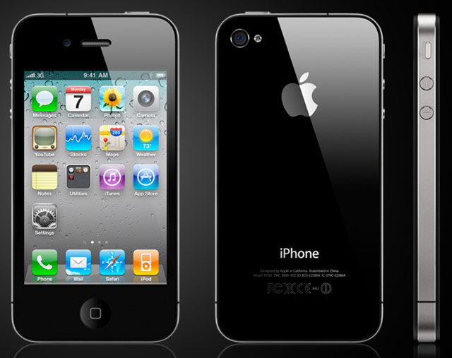
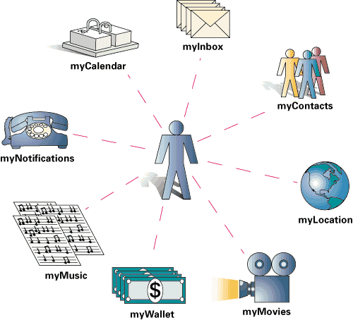
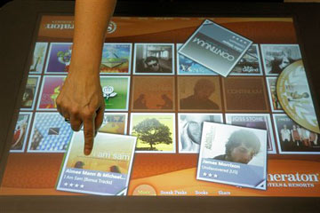

O que é?(){
i++
Por: Tiago Martins Araújo
Por ser uma área emergente de pesquisa, termos como computação ubíqua, computação pervasiva, computação nomádica, computação móvel e outros tantos, têm sido usados muitas vezes como sinônimos, embora sejam diferentes conceitualmente e empreguem diferentes idéias de organização e gerenciamento dos serviços computacionais. Na medida em que a área evolui, esses conceitos vão sendo melhor compreendidos e suas definições se tornam mais claras.
A definição e diferenciação entre estes conceitos são mostradas a seguir.
O que é Computação Móvel?

A computação móvel baseia-se no aumento da nossa capacidade de mover fisicamente serviços computacionais conosco. Combinada com a capacidade de acesso, a computação móvel tem transformado a computação numa atividade que pode ser carregada para qualquer lugar. Uma importante limitação da computação móvel é que o modelo computacional não muda enquanto nos movemos, isto é, o dispositivo não é capaz de obter flexivelmente informação sobre o contexto no qual a computação ocorre e ajustá-la corretamente. Numa solução para acomodar a mudança de ambiente, os usuários poderiam manualmente controlar e configurar a aplicação à medida que se movem, o que seria inviável e inaceitável pela maioria dos usuários.
O que é Computação Pervasiva?

O conceito de computação pervasiva implica que o computador está embarcado no ambiente de forma invisível para o usuário. Nesta concepção, o computador tem a capacidade de obter informação do ambiente no qual ele está embarcado e utilizá-la para dinamicamente construir modelos computacionais, ou seja, controlar, configurar e ajustar a aplicação para melhor atender as necessidades do dispositivo ou usuário. O ambiente também pode e deve ser capaz de detectar outros dispositivos que venham a fazer parte dele. Desta interação surge a capacidade de computadores agirem de forma “inteligente” no ambiente no qual nos movemos, um ambiente povoado por sensores e serviços computacionais.
O que é Computação Ubíqua?

A computação ubíqua beneficia-se dos avanços da computação móvel e da computação pervasiva. A computação ubíqua surge então da necessidade de se integrar mobilidade com a funcionalidade da computação pervasiva, ou seja, qualquer dispositivo computacional, enquanto em movimento conosco, pode construir, dinamicamente, modelos computacionais dos ambientes nos quais nos movemos e configurar seus serviços dependendo das necessidades.
Referências:
Computação Ubíqua: Princípios, Tecnologias e Desafios
wikipedia.org
}